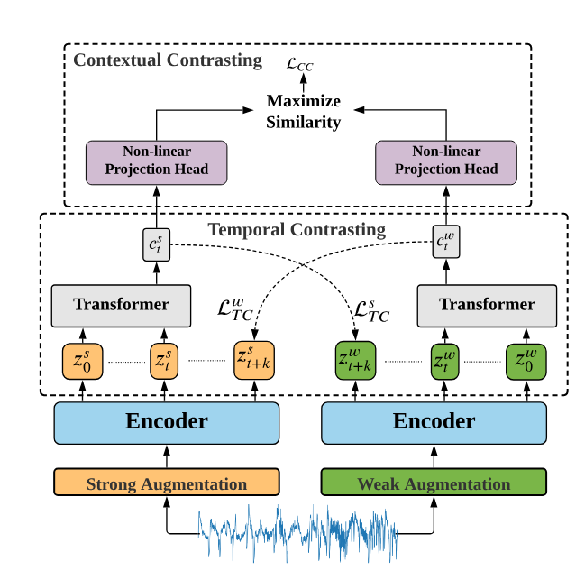
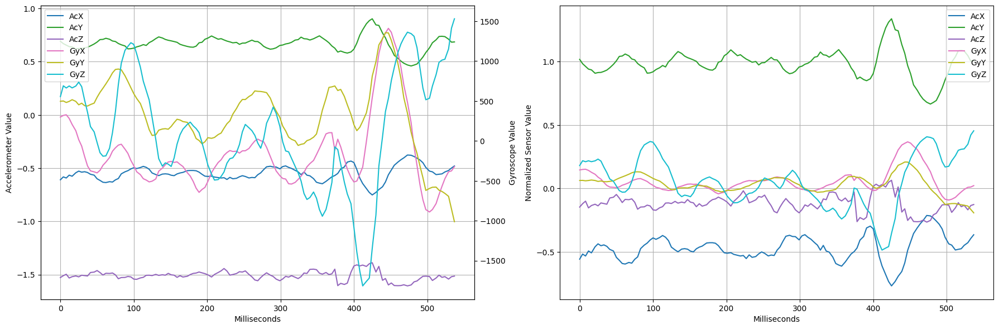
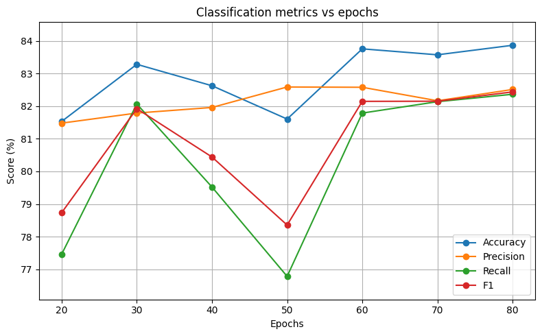
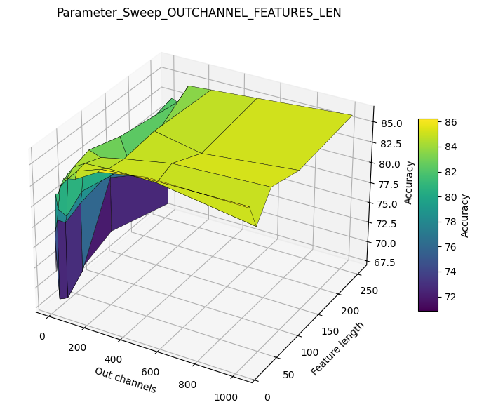
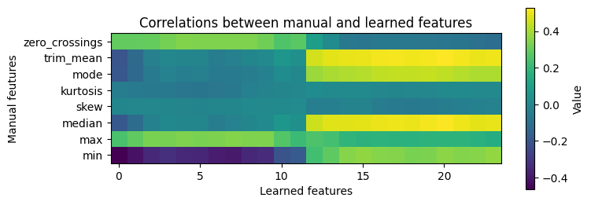
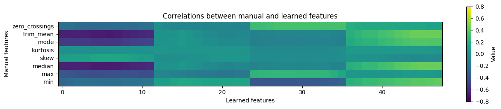
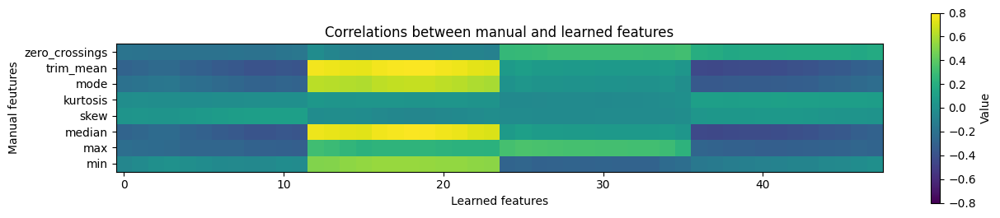
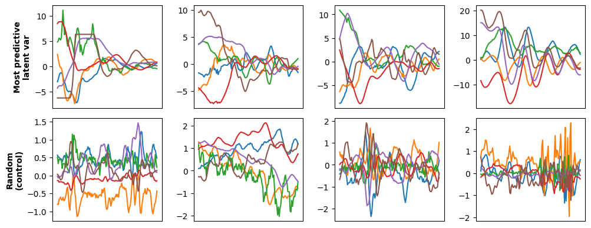
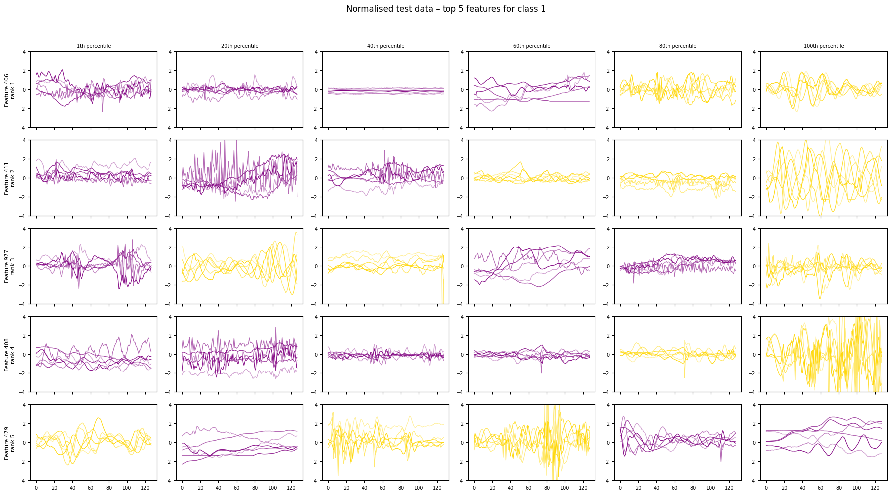

| Learning Interpretable Tremor Features using Supervised Learning | |||
| Caleb Adams & Willem Van Osselaer | |||
| Final project for 6.7960, MIT |
| Learning Interpretable Tremor Features using Supervised Learning | |||
| Caleb Adams & Willem Van Osselaer | |||
| Final project for 6.7960, MIT |
Parkinson’s disease (PD) is a neurological disorder attributed to the loss of the brain’s ability to produce dopamine, leading to severe and progressively worsening mental and physical symptoms [1, 2]. Tremors are one of the first symptoms to develop and have a significant impact on a patient’s quality of life, inhibiting their ability to perform many tasks of daily living.
Moreover, due to their relatively early onset, tremors play a vital role in diagnosing PD in its early stages. However, tremor presentation varies widely among individuals with different disease durations and during different tasks. This makes it challenging to develop characteristic features to help with disease classification [2].
This project is part of a broader initiative at MIT to develop a self-stabilising pen that helps patients with Parkinson’s effectively write and sketch. Unlike traditional machine learning approaches for tremor data, this pen will not rely on any prior knowledge about the action being performed or on control data from healthy individuals. As a result, features must be developed that are invariant to the specific action, ensuring the pen can suppress the tremor effectively.
It is also important for these tremor characteristics to be human interpretable, especially in situations where decision outcomes have a major impact on patients’ quality of life. As such, our project aims to learn human-interpretable, action-invariant features inherent to Parkinson’s tremors from time series data.
Using sensor-based handwriting analysis for PD diagnosis is well established in the literature [3–6]. These methods have been developed significantly in recent years, and improvements in state-of-the-art models have been based around improving both classical machine learning and deep learning approaches to data analysis [7].
Classical machine learning techniques provide highly transparent but manual methods of classifying tremor data. Work in this space extracts key features, such as amplitude, maximum frequency, and standard deviation, from time series data and then uses these features for classification [8]. Research here aims to discover new and important features from the data that can be extracted and provide high discriminative ability for the classification models. Work such as that by Lu et al. (2025), where it was proposed that features be combined in a multimodal way to detect correlations between data streams, and Mucha et al. (2018), in which fractional order derivatives were used to extract key features, both achieved accuracies up to 97.95 % and 89.81 % respectively and are notable for their contributions to improving classification accuracy in tremor detection [5, 6].
This research has achieved high levels of discriminative ability; however, it relies on a manual feature development process that requires substantial time and domain-specific knowledge. Moreover, the feature learning approach cannot easily be adapted to new datasets, data collection modalities, or new diseases, which limits the scalability of this work. Hence, we aim to derive human-interpretable characteristics and draw novel insights without a priori assumptions about features.
Deep learning approaches address the limitations of classical approaches by providing a pipeline for classification that is independent of disease type and clinician knowledge. Deep learning approaches take normalised data as input, process it without manual feature extraction, and output a classification. Work in this space has focused on black-box learning approaches such as Alissa et al. (2022), which achieved 93.5 % accuracy in classifying between PD and control patients with a convolutional neural network (CNN) model trained on time series data gathered by an inertial measurement unit (IMU) [9].
A recent review demonstrated that deep learning research for time series classification tasks for PD and medical data more broadly has revolved around developing hybrid deep learning models that integrate multimodal data (time series, imaging, etc.) and fine-tuning architectures to achieve better accuracies on harder datasets [7]. However, these research directions, despite achieving high predictive accuracy, are hard for clinicians to adopt because they are not transparent in how they arrive at diagnoses.
To address this concern, recent work has used unsupervised learning models to classify disease states [10]. Beyond classification, unsupervised learning allows us to extract features from data that were not previously thought relevant to the disease and that can assist both in disease classification and in developing our understanding of disease characteristics.
One unsupervised learning approach that has achieved high levels of accuracy is the Time-Series representation learning framework via Temporal and Contextual Contrasting (TS-TCC) [10], which achieves between 83 % and 97 % accuracy across a range of time series datasets from individuals with a range of diseases. This work is particularly interesting because it draws from [11–13], which showed that image-based contrastive learning methods do not translate well to time series data, and that contrastive learning can learn invariant representations of the data effectively. From this, the new TS-TCC contrastive learning method was developed to have a flexible structure that can be adapted to novel data types, includes time-series-relevant augmentations, and poses a tough temporal contrasting objective that forces the model to learn strong representations of the data.
However, despite the high accuracy of this model and its extensions through CA-TCC and related works [14], the learned features of the model have not been thoroughly explored. These works focus mainly on developing high-accuracy temporal contrasting models without examining the embedding space, which is critical for translating the work into a clinical setting. We adopt the TS-TCC framework with the goal of learning an embedding space that is meaningful and interpretable, while preserving high accuracy at diagnosing Parkinson’s disease.
We work with a clinical dataset containing time series of angular velocity and linear acceleration of a pen used for six standardised writing tests, for 20 participants with and 20 without Parkinson’s disease [8]. The dataset contains over 9.75 million data points across six input channels. The duration of the test and pen orientation are not standardised, which means that correlations between different data channels will be incredibly important.
For this project, we use the TS-TCC model proposed by Eldele et al. [14]. This model takes as input the six-channel time series data split into patches of length 128 [8]. The model outputs a binary classification of the input data as either PD or not.
The TS-TCC model works by taking as input a segment of the time series data. This segment (patch) is then passed through a strong and a weak augmentation. The strong augmentation divides the segment into a predetermined number of sub-segments, randomly permutes these, concatenates them back together, and applies a random jitter (small additive amplitude change) to each data point in the segment. The weak augmentation simply scales each data point by a factor. These augmented representations are then fed into an encoder, which outputs a latent representation \(\mathbf{z}\). This latent representation is then summarised into a context vector \(\mathbf{c}\) by a transformer head (there is one context vector for each augmentation).
To predict future time steps, a log-bilinear model is used that preserves mutual information between the inputs \(x_{t+k}\) and \(c_t\), such that \[ f_k(x_{t+k}, c_t) = \exp\big((W_k(c_t))^\top z_{t+k}\big). \] The augmented context vectors \(c_t^s\) and \(c_t^w\) are then used to calculate the temporal contrasting losses:
\[ \forall y \in \{w,s\},\quad \mathcal{L}_{\mathrm{TC}}^{s} = - \frac{1}{K} \sum_{k=1}^{K} \log \frac{ \exp\big( ( W_k(c_i^{s}) )^\top z^{w}_{i+k} \big) }{ \sum_{n \in \mathcal{N}_{t,k}} \exp\big( ( W_k(c_i^{s}) )^\top z^{w}_{n} \big) }. \]
These representation vectors \(\mathbf{c}\) are then projected through a non-linear head to a space where contextual contrasting is applied. For a batch size of \(N\), there are two context vectors per sample, so \(2N\) contexts in total. The two augmented views of each sample form a positive pair, and the remaining \(2N-2\) contexts serve as negative samples.

A combined loss function is then calculated:
\[ \mathcal{L} = \lambda_1 \big( \mathcal{L}_{\mathrm{TC}}^{s} + \mathcal{L}_{\mathrm{TC}}^{w} \big) + \lambda_2 \mathcal{L}_{\mathrm{CC}}, \]
where the parameters \(\lambda_1\) and \(\lambda_2\) are tuned and set to 1 and 0.7, respectively. After contrastive learning has been completed, the TS-TCC encoder is frozen and a linear classification head is trained on top for PD vs control classification.
We first z-score normalise our data for each unique test, channel, and patient:
\[ x_{\text{norm}} = \frac{x_i - \mu_x}{\sigma_x}. \]
The data is then split into patches of size \(p\) and divided into training, validation, and test sets at a ratio of 0.6, 0.2, 0.2, respectively. Splitting is done so that there is an even balance of PD and control patches in each set.

We tune the number of epochs, batch size, augmentation parameters, patch length, feature length, and output channel size. Note that feature length and output channels together determine the size of the embedding space and the dimensionality of the input to the linear classification head. For each parameter that we fine-tune, we keep all other parameters constant and perform a parameter sweep over different values of that hyperparameter with a fixed random seed. Because TS-TCC is trained in an unsupervised fashion, we use the linear-head test accuracy as a proxy for the usefulness of the learned feature representations.
After tuning, we choose the Adam optimiser with parameters \(\beta_1 = 0.9\), \(\beta_2 = 0.99\), and learning rate \(lr = 3\times10^{-4}\).
The number of epochs is set to 30. We observe that we obtain comparable accuracy with 30 epochs as with higher values, and because compute cost grows roughly linearly with the number of epochs, we select the smallest value that achieves the highest relative accuracy.

Batch size is set to 128 and patch size to 32, as this combination balances compute time and accuracy. Feature length and output channels are set to 16 and 64 respectively, as they offer the highest accuracy with minimal increase in compute cost.

Once the optimal model parameters are selected, we investigate the learned features in two ways:
To develop our understanding of how TS-TCC creates its embedding space, we start by comparing learned features to manual features such as kurtosis, amplitude, and zero-crossings that are common in the supervised learning literature on tremor data.
For simplicity, we examine an embedding space with just two output channels, each with 12 latent variables. For each of the 24 latent variables (number of channels times feature length), we calculate the correlation to eight manual features computed on all six input channels.
Figure 5 shows the correlations for the X-acceleration input channel and the eight manual features. There appears to be little variation within the same channel, but across channels we see distinct differences. The first channel correlates most strongly with the minimum and maximum, indicating that it captures information about the intensity of the amplitudes. The number of zero-crossings (a proxy for frequency) also correlates with this channel. The second channel correlates with the measures of central tendency: median, mode, and trimmed mean (the mean after removing the 15 % most extreme values). These observations look similar for the other input channels (Y-acceleration, Z-acceleration, etc.).

When increasing to four output channels, we again see channels encode either amplitude or centre, except that these observations are no longer invariant across input channels. For X-acceleration, the first embedding channel is the one that encodes information about the measures of central tendency (Figure 6). For Y-acceleration, however, it is now the second channel that correlates with the measures of central tendency (Figure 7). The output channels still capture similar information as in the smaller model, but with the added capacity they can discriminate between different input channels.


Although these observations do not directly reveal novel features, using manual features to interpret the latent space produced by these smaller models provides promise that our TS-TCC model will also create a meaningful latent space in the higher dimensions that we ultimately care about.
We now extend this analysis to larger architectures. Our highest performing model uses 512 output channels and achieves an accuracy of 86.06 %, whereas a substantially smaller model with 64 output channels achieves a comparable accuracy of 83.03 %. Given an embedding feature length of 16, the linear classification head contains \(512 \times 16 = 8192\) learnable parameters in the larger model, compared to only \(64 \times 16 = 1024\) in the smaller model. Despite this significant difference in dimensional capacity, the performance gap remains modest, suggesting that the higher accuracy of the 512-channel model is correlated with its ability to distribute samples across a much higher-dimensional embedding space rather than learning substantially richer individual features.
This behaviour is illustrated in Table 1, which presents the five highest-weighted latent variables in the linear head for each model, together with the values of each latent variable at the 1st, 20th, 40th, 60th, 80th, and 100th percentiles of the embedding distribution. In the 512-channel model, most top-ranked features exhibit zero or near-zero values across large portions of their distributions, indicating a sparse allocation of information across many latent dimensions. In contrast, the 64-channel model demonstrates greater range within individual features, suggesting that informative structure is concentrated into fewer and more directly interpretable embeddings. This reduced redundancy and clearer feature usage motivate our decision to use the 64-channel model for subsequent embedding analysis.
| Out channels = 512 | Out channels = 64 | ||||||||||||||
|---|---|---|---|---|---|---|---|---|---|---|---|---|---|---|---|
| Rank | Feature | P1 | P20 | P40 | P60 | P80 | P100 | Rank | Feature | P1 | P20 | P40 | P60 | P80 | P100 |
| 1 | 5824 | 0.0000 | 0.0000 | 0.0000 | 0.0000 | 0.0000 | 0.4998 | 1 | 406 | 0.0000 | 0.0000 | 0.1506 | 0.4125 | 0.9706 | 3.0671 |
| 2 | 544 | 0.0000 | 0.0000 | 0.0000 | 0.0000 | 0.0000 | 1.0110 | 2 | 411 | 0.0000 | 0.0000 | 0.1380 | 0.4277 | 0.9500 | 3.3827 |
| 3 | 7824 | 0.0000 | 0.0000 | 0.0000 | 0.0000 | 0.0000 | 0.0534 | 3 | 977 | 0.0000 | 0.0000 | 0.1048 | 0.2693 | 0.4647 | 0.8704 |
| 4 | 2401 | 0.0000 | 0.0000 | 0.0000 | 0.0000 | 0.0244 | 0.6130 | 4 | 408 | 0.0000 | 0.0000 | 0.1565 | 0.4181 | 0.9699 | 3.4517 |
| 5 | 4016 | 0.0000 | 0.0000 | 0.0000 | 0.0000 | 0.0000 | 0.1436 | 5 | 479 | 0.0000 | 0.0000 | 0.0250 | 0.1569 | 0.3463 | 1.0710 |
As an example, we examine the latent variable that has the largest impact on Parkinson’s classification in our 64-output-channel model, as indicated by its weight in the linear classification head. This model is chosen because it has relatively high accuracy while avoiding overfitting. Figure 8 shows the four patches with the highest value for this most predictive latent variable, compared to four randomly sampled patches as a control.

These top four patches share a strong commonality. Not only do they have high amplitudes across each input channel, but the amplitudes also decrease over time.
We can formalise this observation into a human-interpretable metric by defining a simple function. We take the difference of the average amplitude in the first and second halves of a patch and refer to this as the amplitude difference score. The 100 patches with the highest value of our most predictive latent variable have an average amplitude difference score of 0.71, whereas the average score across all patches is just 0.18, a difference of well over half a standard deviation. Analyses like this form a starting point for a deeper understanding of individual latent variables and what they may reveal about Parkinsonian tremors.
To systematise this feature search process and to enable search for novel characteristics, we plot the top five most important embedding features for classification, as defined by their weights in the linear classification head. In Figure 9, one can qualitatively observe patterns in the time-series trajectories of samples drawn from percentiles with non-zero activation values.
By comparison with the percentile statistics in Table 1, steep changes in embedding magnitude correspond to visibly increased variation within the plotted samples. For example, for Feature 408, the jump from 0.9699 at P80 to 3.4517 at P100 is reflected by a marked increase in signal variability in Figure 9. Similar effects are observed for other features, such as Feature 411, which appears to exhibit increasingly sinusoidal motion as its embedding strength increases.
Finally, the top five features shown demonstrate strong discriminative ability, evident from the consistent colour separation across samples for non-zero embedding values, with purple trajectories corresponding to control participants and yellow trajectories corresponding to PD participants.

Overall, this analysis demonstrates that human-interpretable features — novel or otherwise — can be explored through the latent space of a deep learning model that achieves high accuracy on a challenging clinical dataset.
We have encoded Parkinson’s tremor data into a latent space that shows great promise in providing novel, human-interpretable, and action-invariant feature representations. However, further work is needed to make this approach more generalisable and robust.
Increasing the size and breadth of our data would assist in improving both accuracy and the quality of the embedding space. Our dataset consists of just six different in-lab tasks with six input channels. This is far from sufficient to capture the full range of actions that someone may perform with a pen in daily life. To achieve true action invariance, we will need to collect data from a much wider distribution of actions, especially actions outside the lab and over longer time periods.
Additionally, our data does not contain detailed information about patients’ disease states. Because PD motor symptoms worsen over time, it would be valuable to classify patients into early, middle, or late disease phases. Such labels would support finer-grained classification and monitoring of disease progression, rather than the crude binary classification task considered here.
Systematic evaluation of the latent space is critical for understanding the learned embeddings. Our initial observations of a small number of latent variables serve as a proof of concept that human-interpretable meaning can be drawn from the embedding space. However, a much more extensive analysis is required to achieve a deeper understanding of Parkinsonian tremors.
Another crucial direction to improve this work is to study data augmentations. In contrastive learning, augmentations directly define the invariances that the model is encouraged to develop. To progress our goal of building an action-invariant model, we must explore augmentation strategies beyond permutation, jitter, and simple scaling, such as rotation, masking, and window warping [14, 15]. Iwana and Uchida [15] provide extensive inspiration on creative augmentations that achieve robust invariances. Understanding these invariances and how they affect the latent space may also help in discovering novel features.
TS-TCC is one of the state-of-the-art contrastive learning models for time series data and has a strong track record across a variety of real-world tasks, making it an outstanding starting point for our project. Nonetheless, it is far from the only option available. There is ample opportunity to experiment with alternative architectures or even design a bespoke model tailored specifically to handwriting tremor analysis [10, 14].
We used a time-series contrastive learning model to classify inertial measurement data according to patient disease state. The model was systematically fine-tuned for our dataset, achieving a best test accuracy of 83.03 % using a compact and highly discriminative representation. Examination of the learned feature space shows strong potential for extracting novel, human-interpretable latent features from Parkinsonian tremor data.
Overall, this proof-of-concept study demonstrates that contrastive learning provides a viable approach for analysing previously unexplored clinical time series datasets. These results motivate future efforts to explicitly connect learned representations with established biomarkers, improve model generalisation on larger cohorts, and explore deployment in clinical monitoring applications.
[1] Yaqiang Li, Zhi Lv, Yulong Dai, Liuzhenxiong Yu, Lin Zhang, Kai Wang, and Panpan Hu. The global, regional, and National burden of Parkinson’s disease in 204 countries and territories, 1990–2021: a systematic analysis for the global burden of disease study 2021. BMC Public Health, 25(1):3047, September 2025.
[2] Roger L. Albin. Parkinson Disease. Oxford University Press, New York, first edition, August 2022.
[3] Yingcong Huang, Kunal Chaturvedi, Al-Akhir Nayan, Mohammad Hesam Hesamian, Ali Braytee, and Mukesh Prasad. Early Parkinson’s disease diagnosis through hand-drawn spiral and wave analysis using deep learning techniques. Information, 15(4):220, April 2024.
[4] Kamila Białek, Anna Potulska-Chromik, Jacek Jakubowski, Monika Nojszewska, and Anna Kostera-Pruszczyk. Analysis of handwriting for recognition of Parkinson’s disease: current state and new study. Electronics, 13(19):3962, October 2024.
[5] Jan Mucha, Jiri Mekyska, Marcos Faundez-Zanuy, Karmele Lopez-De-Ipina, Vojtech Zvoncak, Zoltan Galaz, Tomas Kiska, Zdenek Smekal, Lubos Brabenec, and Irena Rektorova. Advanced Parkinson’s disease dysgraphia analysis based on fractional derivatives of online handwriting. In 2018 10th International Congress on Ultra Modern Telecommunications and Control Systems and Workshops (ICUMT), pages 1–6, Moscow, Russia, November 2018. IEEE.
[6] Huimin Lu, Guolian Qi, Dalong Wu, Chenglin Lin, Songzhe Ma, Yingqi Shi, and Han Xue. A novel feature extraction method based on dynamic handwriting for Parkinson’s disease detection. PLOS ONE, 20(1):e0318021, January 2025.
[7] Md. Ariful Islam, Md. Ziaul Hasan Majumder, Md. Alomgeer Hussein, Khondoker Murad Hossain, and Md. Sohel Miah. A review of machine learning and deep learning algorithms for Parkinson’s disease detection using handwriting and voice datasets. Heliyon, 10(3):e25469, February 2024.
[8] Eugênio Peixoto Júnior, Italo L. D. Delmiro, Naercio Magaia, Fernanda M. Maia, Mohammad Mehedi Hassan, Victor Hugo C. Albuquerque, and Giancarlo Fortino. Intelligent sensory pen for aiding in the diagnosis of Parkinson’s disease from dynamic handwriting analysis. Sensors, 20(20):5840, October 2020.
[9] Mohamad Alissa, Michael A. Lones, Jeremy Cosgrove, Jane E. Alty, Stuart Jamieson, Stephen L. Smith, and Marta Vallejo. Parkinson’s disease diagnosis using convolutional neural networks and figure-copying tasks. Neural Computing and Applications, 34(2):1433–1453, January 2022.
[10] Emadeldeen Eldele, Mohamed Ragab, Zhenghua Chen, Min Wu, Chee Keong Kwoh, Xiaoli Li, and Cuntai Guan. Time-series representation learning via temporal and contextual contrasting. 2021. Version number: 1.
[11] Jean-Yves Franceschi, Aymeric Dieuleveut, and Martin Jaggi. Unsupervised scalable representation learning for multivariate time series. 2019. Publisher: arXiv, version number: 4.
[12] Mostafa Mohsenvand, Mohammad Rasool Izadi, and Pattie Maes. Contrastive representation learning for electroencephalogram classification. Proceedings of Machine Learning Research, 126:238–253, 2020.
[13] Xinlei Chen and Kaiming He. Exploring simple Siamese representation learning, 2020. Version number: 1.
[14] Emadeldeen Eldele, Mohamed Ragab, Zhenghua Chen, Min Wu, Chee-Keong Kwoh, Xiaoli Li, and Cuntai Guan. Self-supervised contrastive representation learning for semi-supervised time-series classification. 2022. Publisher: arXiv, version number: 3.
[15] Brian Kenji Iwana and Seiichi Uchida. An empirical survey of data augmentation for time series classification with neural networks. PLOS ONE, 16(7):e0254841, July 2021.